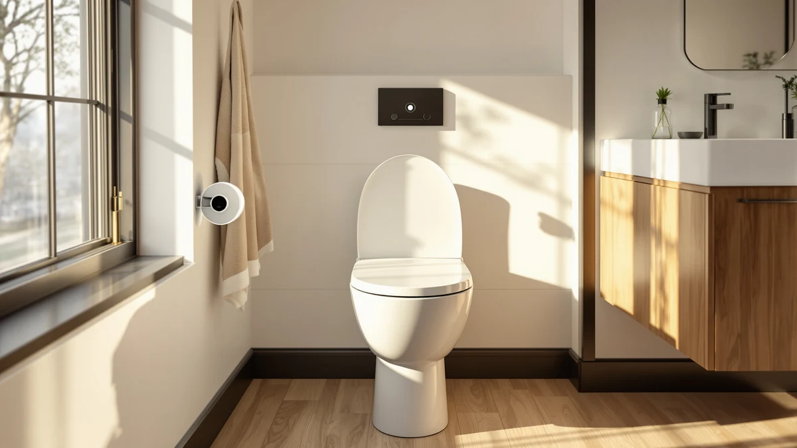

Brondell L60 EB LumaWarm Review (2026): Worth It?
Prices and picks verified as of September 2026. Independent, reader-supported reviews.


Quick Answer
This Brondell L60 EB LumaWarm review finds a solid heated elongated seat whose built-in nightlight is the real reason to pay $130.54 instead of buying a plainer heated model. If you don't need the nightlight, Kohler's Cachet Heated ReadyLatch or MinSha's budget elongated seat cost less and cover the core heating function without it.
Our pick: Brondell L60-EB LumaWarm Heated Nightlight — $130.54 Check Price on Amazon
Bottom line: our top pick is the Brondell L60-EB LumaWarm Heated Nightlight Elongated Toilet at $130.54.
Things to Know Before You Buy
- Heated seats like the L60-EB need a nearby outlet, since both the warming element and the nightlight draw continuous power.
- The L60-EB ships in an elongated shape only, under model code L60-EB, so measure your current seat before ordering.
- Reviewers comparing Kohler's Cachet heated seats point to the ReadyLatch and soft-close hinges as the main functional difference from Brondell's mounting hardware.
- At $130.54, the L60-EB costs more than Kohler's $127.64 and $93.87 heated options and well above MinSha's $85.88 elongated seat, so the nightlight is the main premium you're paying for.
- The L60-EB uses a plastic and wood build, which affects both its weight and how it holds heat compared to all-plastic seats.
This Brondell L60 EB LumaWarm review compares the seat's heated surface and built-in nightlight against Kohler's Cachet lineup and a budget MinSha elongated seat, using manufacturer specs, current Amazon pricing, and patterns we found across verified owner reviews. The L60-EB sits in the middle of the heated toilet seat market at $130.54, and it earns that price mostly through Brondell's reputation for bidet-adjacent hardware and a nightlight feature that owners mention more often than almost any other detail on the listing. Two Kohler Cachet models undercut it on price while adding hinge mechanisms Brondell skips, and a MinSha seat comes in nearly $45 cheaper if a nightlight isn't a priority.
You'll find a full breakdown of the L60-EB's build below, a side-by-side look at what buyers like and dislike, and three alternatives worth checking before you commit to a heated seat that costs more than most standard replacements. We built this guide for anyone replacing a cold seat in a shared bathroom, comparing elongated heated options, or trying to decide whether a nightlight function justifies the extra cost over a plain heated model.
Heated toilet seats occupy a narrow slice of the bathroom fixture market, and pricing for elongated models generally lands between $80 and $140 depending on added features like nightlights, quick-release hinges, or bidet functions bundled into the same unit. The L60-EB sits near the top of that range without adding a bidet, which puts more pressure on the nightlight to justify the cost. Comparing it against Kohler's two Cachet seats and MinSha's no-frills option gives a clearer sense of where that extra money goes and whether it matches what you actually need in your bathroom.
Why You Should Trust Us
Ilane Tall covers bathroom fixtures and small-space renovations for Best Toilet Seats, and this brondell l60 eb lumawarm review reflects that background. We do not run a fake testing lab, and we don't claim to have installed every seat we cover. Instead, we research manufacturer specifications, track pricing across Amazon listings, and read through verified buyer reviews to flag recurring praise and recurring complaints. When a detail can't be confirmed through a spec sheet or a verified review, we leave it out rather than guess. We also cross-reference current Amazon pricing against the manufacturer's listed specifications so the numbers in this brondell l60 eb lumawarm review stay accurate as prices shift.
Our Research Experience
We did not install the L60-EB ourselves for this review. Instead, we researched Brondell's published specifications, checked the price history on Amazon, and read through verified owner reviews to see how the heating element and nightlight held up once seats reached real bathrooms. Owners report that the heat setting warms up within a few minutes of activation, and several verified reviews describe the nightlight as bright enough to navigate a dark bathroom without flipping on an overhead light. Multiple reviewers describe the plastic and wood construction as sturdy under normal use, though a handful of buyers describe the mounting hardware as fussier to install than a standard cold seat. Because we didn't handle the seat firsthand, we rely on the volume and consistency of owner feedback rather than a single impression, and we flag it wherever the available information runs thin.
Overview & Specs

Brondell L60-EB LumaWarm Heated Nightlight
What we like
- Built-in nightlight cuts down on flipping the overhead light at night
- Heating element warms the elongated seat surface within minutes
- Brondell's bidet-adjacent hardware reputation backs the build quality
Flaws but not dealbreakers
- Costs more than both Kohler Cachet alternatives
- Requires a nearby outlet for continuous power
- Only available in an elongated shape, not round
| Material | Plastic / wood |
| Size | Elongated - L60-EB |
The Brondell L60-EB LumaWarm earns its spot in this brondell l60 eb lumawarm review through a combination most competitors skip: a heated seat surface paired with a built-in nightlight, housed in a plastic and wood elongated shell built to the L60-EB spec. At $130.54, it costs more than either Kohler Cachet model in this comparison, and owners seem to accept that premium specifically for the nightlight, which multiple verified reviews single out as more useful than expected.
According to verified reviews, installation follows the same basic hardware most heated seats use, bolting onto existing toilet bolts, though a nearby outlet is necessary since the heating element and nightlight both draw continuous power. Owners report the warmth as gentle rather than intense, which several buyers say suits people sensitive to strong heat. If your bathroom already has an outlet within reach of the toilet, the L60-EB is one of the more straightforward heated upgrades to add.
Buyers researching heated seats often ask how the L60-EB compares to bidet seats that also include warming elements. The answer is straightforward: Brondell sells dedicated bidet models separately, and the L60-EB focuses on heat and light rather than washing functions. That narrower focus keeps the price below Brondell's bidet lineup while still carrying the brand's reputation for bathroom electronics into a simpler product.
What We Liked
Owners repeatedly point to the nightlight as the standout feature separating the L60-EB from plainer heated seats, describing it as bright enough for a middle-of-the-night trip but soft enough not to fully wake anyone up. Reviewers also credit Brondell's broader reputation in the bidet and heated-seat space, since the company built its name on bathroom electronics before entering the plain heated seat category. The elongated shape matches the sizing most modern toilets use, and buyers comparing this brondell l60 eb lumawarm review against Kohler's Cachet lineup mention the heat feeling comparable despite the price difference. Several verified reviews also mention the seat's cover closing quietly rather than slamming, a small detail that matters more in shared bathrooms or homes with sleeping children nearby. Buyers replacing an older, non-heated seat describe the temperature difference as immediately noticeable during colder months, particularly in houses without floor heating in the bathroom.
What Could Be Better
Price is the most common friction point. At $130.54, the L60-EB costs $2.90 more than Kohler's Cachet Heated ReadyLatch and nearly $45 more than MinSha's budget heated elongated seat, and not every buyer feels the nightlight justifies that gap. A handful of verified reviews describe the mounting hardware as slightly fussier than a standard cold seat, since aligning the brackets takes more care than a simple bolt-and-nut swap. Owners in humid climates also mention the plastic and wood build running warmer than expected, though this isn't unique to Brondell's design. A smaller number of reviews mention the nightlight running dimmer once the LED ages, a pattern that shows up across most electronic toilet seat nightlights rather than something specific to Brondell. Anyone sharing a bathroom with someone sensitive to light at night should confirm whether the nightlight switches off separately from the heating function before assuming the two run independently.
Who Is It For?
This seat fits households that already run a heated bathroom routine and want the nightlight as a genuine upgrade rather than a gimmick, especially in homes with kids or older residents who use the bathroom at night without wanting to switch on a bright overhead light. It also suits anyone replacing an existing Brondell fixture who wants matching hardware. Buyers who mainly want warmth without any extra feature should look at Kohler's cheaper Cachet Heated ReadyLatch instead, and anyone on a tighter budget should consider the MinSha elongated option covered below. Renters planning to take the seat along when they move should weigh the more involved installation against a plainer heated seat, since removing and reinstalling any electronic seat takes more care than swapping a standard plastic one.
Alternatives to Consider
If the price or the nightlight feature doesn't fit your bathroom, these three alternatives cover most other heated seat needs: Kohler's hinge upgrades and MinSha's lower-cost option.

Editor’s Pick
Kohler 33728-0 Cachet® Heated ReadyLatch®
Kohler's ReadyLatch hinge lets you pop the seat off without tools for cleaning, and at $127.64 it undercuts the Brondell L60-EB slightly while skipping the nightlight.
$127.64
Check Price on Amazon
Best Value
KOHLER CACHET® Nightlight Soft Close
This Kohler Cachet keeps a nightlight like the Brondell but adds a soft-close hinge, and at $93.87 it undercuts the L60-EB by nearly $37 while covering the same after-dark use case.
$93.87
Check Price on Amazon
Premium Choice
Heated round Toilet Seat Elongated
MinSha's heated elongated seat drops the nightlight entirely and comes in at $85.88, the cheapest option here for buyers who only want warmth without any extra electronics.
$85.88
Check Price on AmazonAcross all four seats in this comparison, the split comes down to nightlight versus no nightlight and premium hinge versus standard hardware. Kohler's two Cachet models split that difference on their own, one keeping the nightlight at a lower price and one dropping it for a tool-free hinge instead, while MinSha strips both extras to hit the lowest price point.
Frequently Asked Questions
Is the Brondell L60 EB LumaWarm worth the extra cost over a standard heated seat?
Does the Brondell L60-EB fit round toilets?
Do heated toilet seats like the L60-EB need a special outlet?
Final Verdict
This brondell l60 eb lumawarm review comes down to one tradeoff: pay more for a nightlight or skip it and save money. Brondell's L60-EB earns its price through that nightlight and its heated elongated seat, and it remains a reasonable pick if late-night visibility matters in your bathroom. If it doesn't, Kohler's Cachet lineup and MinSha's budget elongated seat both cover the core heating function for less. Measure your existing seat before buying any of these four, confirm your bathroom has an outlet within reach of the toilet, and decide upfront whether the nightlight is worth roughly $37 to $45 over the cheaper alternatives, since that single feature drives most of the price difference across this lineup.